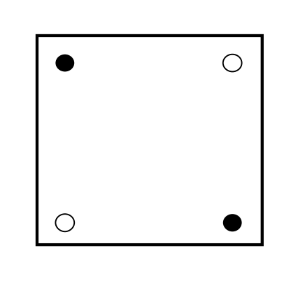
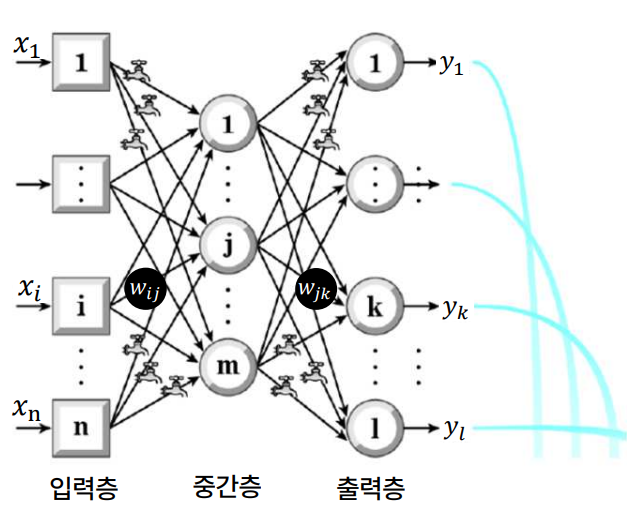
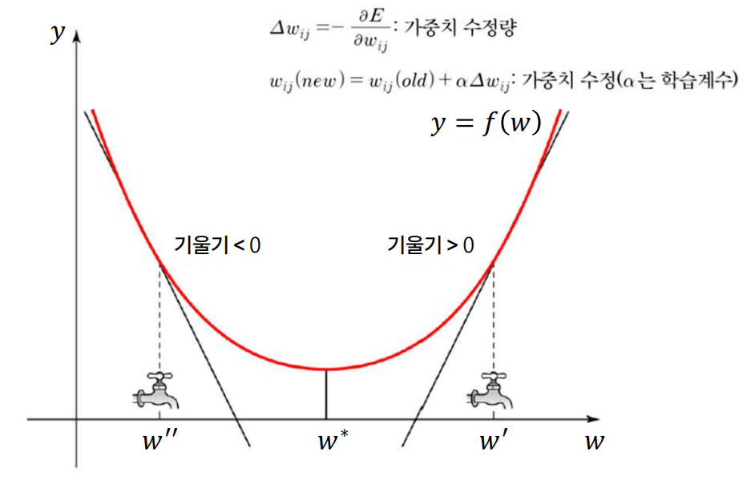
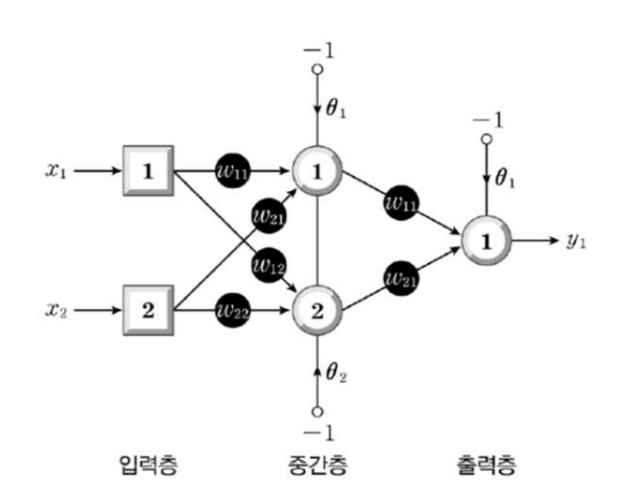

비유: 가중치 = 수도꼭지/밸브. 학습 = 원하는 폭포 모양이 나오도록 수도꼭지들을 조절하는 일.

손실 함수(Loss Function) = 비용 함수(Cost Function) = 오차 함수(Error Function) — 셋 다 같은 의미. 신경망 학습은 이 함수를 최소화하는 가중치를 찾는 일.

| 기호 | 의미 |
|---|---|
| ΔW | 가중치 변화량 (수정값) |
| α | 학습률(Learning Rate). 작은 양수 |
| ∂E/∂W | 오차 E를 가중치 W로 미분한 기울기 |
해석:
| X₁ | X₂ | X₁ XOR X₂ |
|---|---|---|
| 0 | 0 | 0 |
| 0 | 1 | 1 |
| 1 | 0 | 1 |
| 1 | 1 | 0 |

비유: "너 때문이닷!". 출력층이 자기 오차의 책임을 중간층에 거꾸로 묻고, 중간층은 그것을 모아 자기 가중치를 수정.
역전파는 미분의 연쇄 법칙(Chain Rule)을 사용:
| 하이퍼파라미터 | 의미 |
|---|---|
| 학습률 (Learning Rate) | 한 번에 얼마나 학습할지 |
| 에폭 (Epoch) | 전체 학습 데이터를 몇 번 반복할지 |
| 중간층 수 | 은닉층 개수 |
| 뉴런 수 | 각 층의 폭(width) |
| 활성함수 | Sigmoid / Tanh / ReLU |
| 정규화율 (Regularization Rate) | 과적합 방지 강도 |
| 현상 | 설명 | 원인 | 해결 |
|---|---|---|---|
| 과소적합 (Underfitting) | 학습 데이터에도 잘 안 맞음 | 모델이 너무 단순 | 층/뉴런 추가, 학습 시간 늘림 |
| 과적합 (Overfitting) | 학습 데이터엔 OK, 새 데이터엔 약함 | 모델이 너무 복잡 / 학습 과다 | 정규화, 조기 종료, 데이터 증강 |
| 항목 | 핵심 |
|---|---|
| 학습 | 가중치(W) 수정 = 시냅스 강도 조절 |
| 오차/손실 | E = (d − a)², 손실=비용=오차 함수 |
| 경사하강법 | ΔW = −α·(∂E/∂W). 기울기 반대 방향으로 이동 |
| 학습률 α | 작은 양수. 작으면 느리고 크면 발산 |
| 1969 XOR 문제 | Minsky & Papert. 단층 신경망 한계 → AI 1차 겨울 |
| 1986 역전파 | Rumelhart et al. 출력층 오차를 입력층 방향으로 거꾸로 전파 |
| 연쇄 법칙 | 역전파의 수학적 토대. ∂E/∂W₁ = ∂E/∂y · ∂y/∂z · ∂z/∂W₁ |
| 하이퍼파라미터 | 학습률·층수·뉴런수·활성함수·정규화 등. 사람이 설정 |
| 과소적합 | 모델 단순. 학습 데이터에도 안 맞음 |
| 과적합 | 모델 복잡. 학습 데이터엔 OK, 새 데이터엔 약함. 정규화로 해결 |
| 활성함수 진화 | Sigmoid → Tanh → ReLU (현 표준) |
| TF Playground | 브라우저 신경망 시뮬레이터. 직접 실험 |
강의 영상 마지막에 등장하는 빈칸 채우기 — 핑크 단어가 정답입니다.
생물학적 뉴런의 시냅스는 두 뉴런 사이에 전송되는 정보의 양을 조절하는 역할을 한다. 따라서 뉴런 사이의 연결선을 생화학적 신호가 지나가는 통로라고 가정하면 시냅스는 통로 중간에 있는 ( 밸브 (혹은 수도꼭지) )로 생각할 수 있다.
사용자는 입력층으로 데이터를 보내면 출력층에서 나오는 결과에만 관심이 있지 중간층에서 일어나는 일들에는 관심이 없다. 또 그래야 마땅하다. 그래서 중간층을 은닉층이라 부르는 중간층 뉴런의 ( 목표 ) 출력이란 건 애초에 존재하지 않는 값이다. 따라서 중간층 뉴런이 출력해야 할 값, 즉 정답이란 건 애초부터 존재하지 않는 값이기 때문에 경사 강하를 이용해서 중간층 뉴런으로의 연결 가중치를 수정할 수 없다.
신경망에 관심이 있다면 텐서플로 플레이그라운드 (https://playground.tensorflow.org/)에 반드시 들어가서 놀아 볼 필요가 있다. 잘 노는 사람이 성공한다. 잘 놀 수 있도록 중요한 힌트를 주겠다. 푸른색은 ( 양수 ), 붉은색은 음수고, 색이 진하거나 선이 두꺼울수록 절댓값이 크다는 걸 알면 이해하는 데 크게 도움이 된다. 흰색에 가까울수록 0이다.